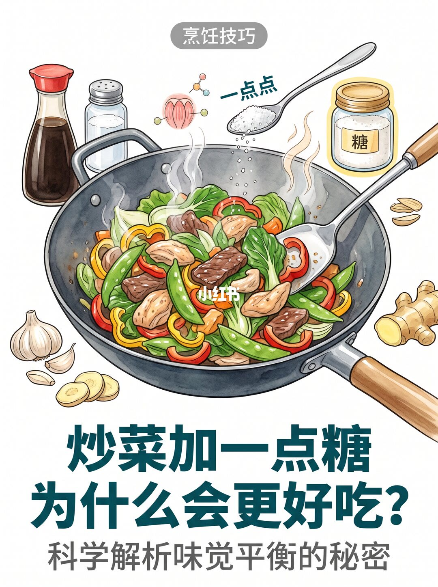
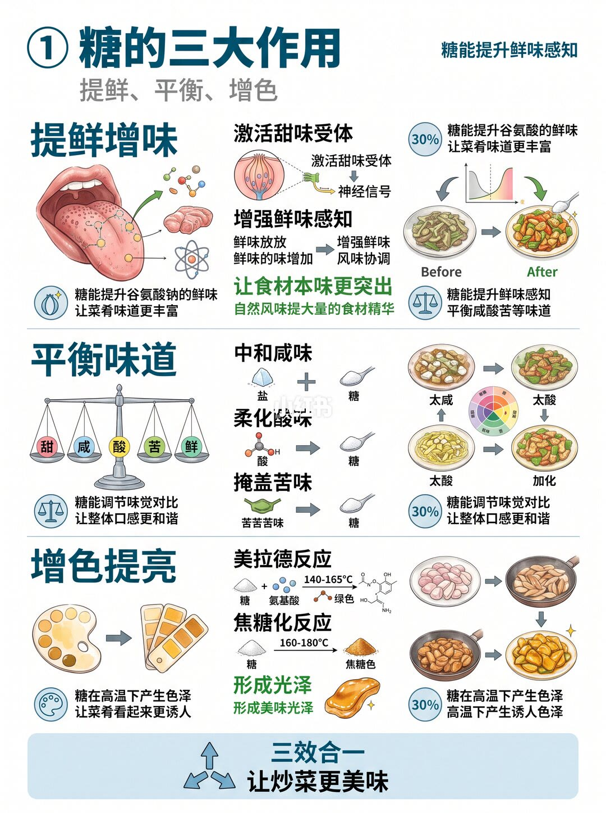
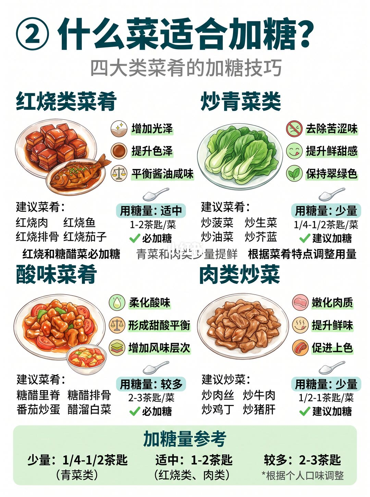
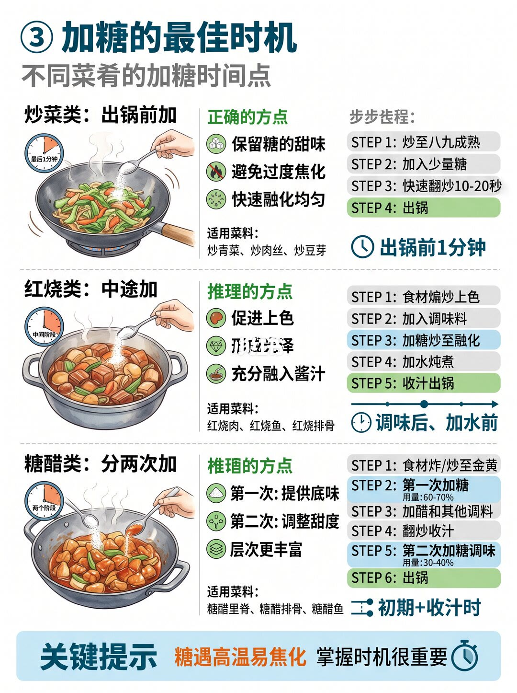
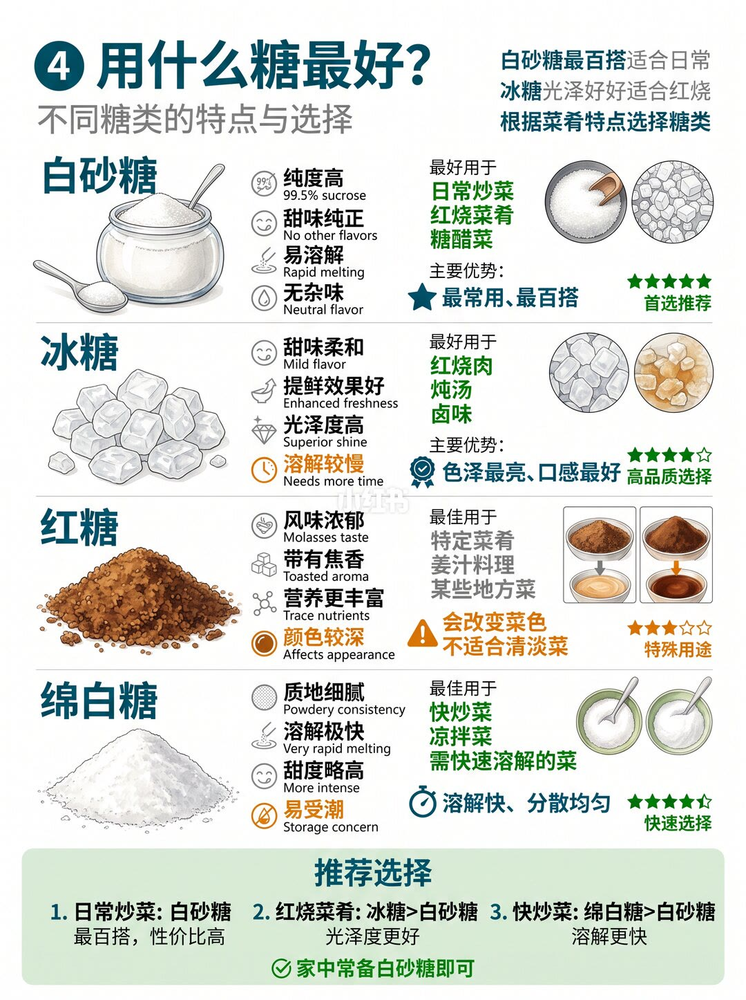
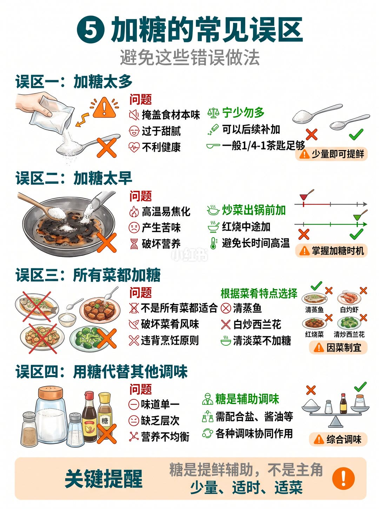
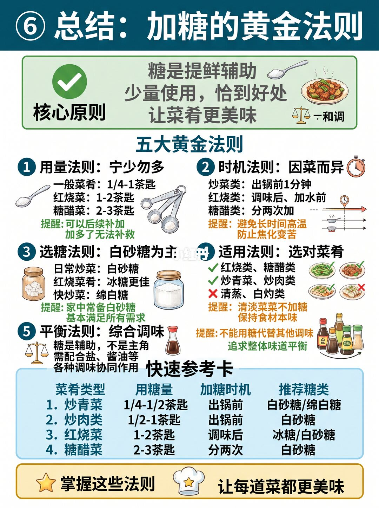

图文实录 · 小红书 · 糖果测评
不同菜品怎么加糖？一次讲清
糖被写成提鲜的配角：青菜出锅前 1/4–1/2 茶匙，红烧 1–2 茶匙，糖醋 2–3 茶匙分两次。清蒸和白灼不加。第 3 页和第 6 页对青菜的说法并不一致。
1/7
封面只问为什么
标题「炒菜加一点糖为什么会更好吃」，副题「科学解析味觉平衡的秘密」。画面是一只炒锅，勺里往下撒糖。没有用量。

2/7
提鲜、平衡、上色
三大作用：提鲜增味、平衡味道、增色提亮。提鲜写的是激活甜味受体、让鲜味更明显、突出食材本味，并有一处把增幅写成大约三成。平衡是中和咸、柔化酸、掩盖苦，天平上是甜咸酸苦鲜。上色分成两段温度：美拉德是糖和氨基酸在 140–165°C，焦糖化是糖在 160–180°C，另外形成光泽。页底「三效合一」。

3/7
四类菜，三种勺
红烧必加，适中，每道 1–2 茶匙，用来出光、加深颜色、压酱油的咸。例子有红烧肉、鱼、排骨、茄子。炒青菜建议加，少量，1/4–1/2 茶匙，去苦涩、提鲜甜、保持翠绿。例子有菠菜、生菜、油菜、芥蓝。酸味菜必加，较多，2–3 茶匙，例子有糖醋里脊、糖醋排骨、番茄炒蛋、醋溜白菜。肉类炒菜建议加，少量，1/2–1 茶匙，写的是嫩化、提鲜、促进上色。页底参考却把红烧和肉类炒菜都放进「适中 1–2 茶匙」，和肉类格子里的 1/2–1 茶匙不一致。末行写按个人口味调整。

4/7
三种时机
炒菜出锅前加，标的是最后 1 分钟：炒到八九成熟，加少量糖，快炒 10–20 秒再出锅。好处是保住甜味、避免焦过头、融化均匀。红烧中途加：原料炒变色，放调味，加糖炒化，再加水炖，最后收汁。时机写成调味后、加水前。糖醋分两次：先煎或炒到金黄，第一次放总量的 60–70%，再加醋和其他调味、收汁，第二次放剩下的 30–40%。页底：糖遇高温容易焦，时机很重要。

5/7
四种糖
白砂糖：纯度写成 99.5% 蔗糖，甜味干净、化得快，日常、红烧、糖醋都能用，五星，最常用。冰糖：味淡、提鲜、光泽好，但化得慢，适合红烧肉、汤和卤，四星。红糖：有糖蜜和烘烤味，会把菜染深，不适合浅色菜，三星，给姜和特定菜。绵白糖：粉状、化得很快、甜味稍冲，容易受潮结块，适合快炒和凉菜，四点五星。页底：家常炒菜用白砂糖；红烧冰糖更亮；快炒绵白糖化得更快；家里备白砂糖就够大多数情况。

6/7
标题写五个误区，页面列了四个
一、加太多会盖住本味、又甜又腻。宁少勿多，一般 1/4–1 茶匙就够。二、加太早容易高温焦苦。炒菜出锅前加，红烧中途加。三、不是所有菜都加。清蒸鱼、白灼虾、炒西兰花被打叉；红烧打勾。清淡菜不加。四、不能用糖代替盐和酱油，糖是辅助。页底：糖是提鲜辅助，不是主角；少量、适时、适菜。标题写五个误区，这一页能数清的是四个。

7/7
五条法则和一张表
核心原则：糖是提鲜辅助，少量，恰到好处。五条：宁少勿多，普通菜 1/4–1 茶匙，红烧 1–2，糖醋 2–3，多了改不回来。时机按菜：炒菜出锅前 1 分钟，红烧在调味后加水前，糖醋分两次，避免长时间高温。选糖以白砂糖为主，红烧更适合冰糖，快炒可用绵白糖。适用上，红烧糖醋、炒青菜、炒肉打勾，清蒸和白灼打叉。平衡上，糖要和盐、酱油一起用。底表：炒青菜 1/4–1/2 茶匙、出锅前、白砂糖或绵白糖；炒肉 1/2–1 茶匙、出锅前、白砂糖；红烧 1–2 茶匙、调味后、冰糖或白砂糖；糖醋 2–3 茶匙、分两次、白砂糖。

汇总
以第 7 页的表为准，青菜看菜名
能直接照做的是第 7 页那张表，时机在第 4 页，糖种在第 5 页。第 3 页页脚把肉类炒菜写成 1–2 茶匙，和第 7 页的 1/2–1 茶匙冲突，跟第 7 页。第 3 页建议给芥蓝等青菜少量糖，第 6 页把炒西兰花打叉。清蒸和白灼两页都说不加。140–165°C 和 160–180°C 是上色栏的温度，不是下糖的油温。这是笔记的勺量，不是营养建议。